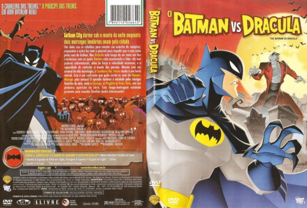

Outro Título:The Batman vs. Dracula
País:United States, 83 minutos
Idiomas falados:Espanhol, Inglês, Português
Gênero(s):Animação, Ação, Fantasia, Mistério
Diretor(s):Michael Goguen
Escritor(es):Duane Capizzi
Codec:MPEG-2 (DVD)
Número: 5831


Certificado:10
Sinopse:
Gotham City está aterrorizada não apenas pelas recentes fugas da cadeia do Coringa e do Pinguim, mas por ninguém menos que a criatura das trevas mais temida e original: o Conde Drácula. Conseguirá o Batman impedir que o sanguinário vampiro consiga dominar as mentes de todos os habitantes da cidade?
Elenco:


Tipo de mídia: DVD5,
Legendas: Espanhol, Inglês, Português, Sem Legendas
Alugado: Não
Tela: Anamorphic Widescreen